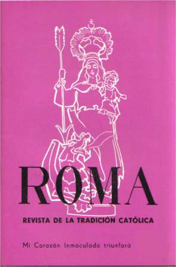

REVISTA ROMA

"PARA EXTIRPAR LOS ERRORES DEBEN DIFUNDIRSE POR TODAS PARTES ESCRITOS SALUDABLES, LOS CUALES A LA VEZ QUE LLEVEN IMPRESO EL SELLO DE LA VERDAD, CONDUZCAN A LA VIRTUD". León XIII, Enc. "Quod Multum"
La revista "Roma", fundada en 1967, fue durante años una auténtica defensora de la Fe de siempre. Desde sus páginas se denunciaron sin claudicaciones los errores modernistas, cumpliendo con lo expresado por León XIII en la Encíclica arriba mencionada. Nunca cejó en sus esfuerzos por difundir la Verdad, proclamando valientemente las desviaciones doctrinarias del llamado Concilo Vaticano II.
Queremos rendir nuestro agradecido homenaje al Ingeniero M. Roberto Gorostiaga, creador y sostenedor de esta publicación, que cumplió cabalmente con el deseo expresado por S.S. León XIII en su Encíclica "Pergrata Nobis", de que existan impresos que: opongan al veneno esparcido desde todas partes, el oportuno remedio, defendiendo la verdad, la virtud y la Religión.
La revista consta de dos períodos: del N° 1 al 89, de apoyo a la obra y pensamiento de Monseñor Lefebvre, y del N° 90 en adelante, de adhesión a la posición sedevacantista. No publicaremos algunos de los artículos, por no coincidir con las posiciones religiosas sostenidas por sus autores, como tampoco los que hayan perdido actualidad.
ÍNDICE
CONTRATAPA PERMANENTE:
CREDO ATANASIANO O SÍMBOLO "QUICUMQUE"
Primera época
|
||
Segunda época |
||
|